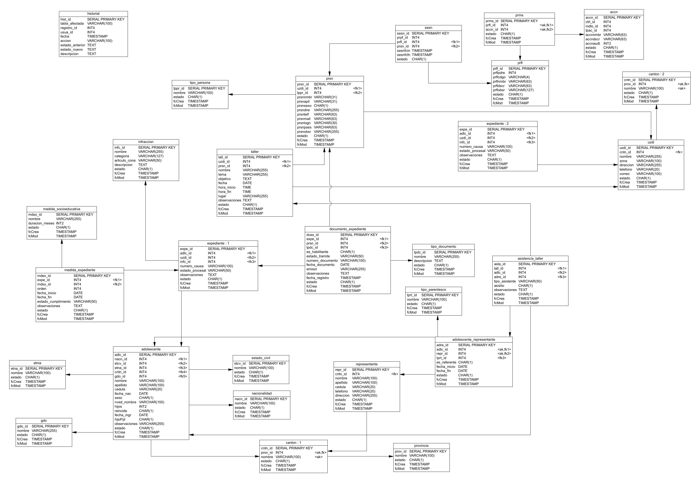

DDL PostgreSQL · Versión 8
Modelo de
datos v8
Script unificado para PostgreSQL 14+: seis esquemas, auditoría por triggers, índices de rendimiento
y catálogos base de parametrización inicial.
Cambios respecto a la versión 7
- Nueva tabla detalle
adolescente.medida_expediente con el atributo obligatorio orden: una o más medidas por expediente, consecutivas o simultáneas según el CONA.
- Se desacopla
mdso_id de adolescente.expediente; la relación pasa por medida_expediente. Se incorpora numero_causa.
- Se mantiene
cedula VARCHAR(20) para cédula o pasaporte.
- Campo
estado CHAR(1) NOT NULL DEFAULT 'V' con CHECK ('V','F') en todas las tablas.
- Se conservan todos los esquemas y tablas, incluidas
accn, prms, sesn e historial.
Diagrama físico completo
Modelo físico de la versión 8 con las 26 tablas, sus tipos de datos, claves primarias, claves alternas <ak> y claves foráneas <fk>. Las tablas canton y expediente aparecen dos veces (: 1, : 2) solo para ordenar las líneas del diagrama.

Tablas por esquema
Estructura institucional estructura_institucional
| Tabla | PK | Campos clave | Relaciones |
|---|
provincia | prov_id | nombre (único) | — |
canton | cntn_id | nombre (único por provincia) | prov_id → provincia |
uzdi | uzdi_id | nombre, zona, dirección, teléfono, correo | cntn_id → canton |
Seguridad seguridad
| Tabla | PK | Campos clave | Relaciones |
|---|
prfl | prfl_id | prflcdgo, prflnmbr, prfldscr, prflpdre (nullable) | — |
accn | accn_id | accnnmbr, accndscr, accnaudt, ctrl_id, mdlo_id | — |
prms | prms_id | único (prfl_id, accn_id) | prfl_id → prfl · accn_id → accn |
tipo_persona | tppr_id | nombre (único) | — |
prsn | prsn_id | prsnnmbr, prsnapll, prsnsexo, prsnmail, prsnlogn (único), prsnpass | uzdi_id → uzdi · tppr_id → tipo_persona |
sesn | sesn_id | sesnfcin, sesnfcfn | prfl_id → prfl · prsn_id → prsn |
historial | hist_id | tabla_afectada, registro_id, usua_id, accion, estado_anterior, estado_nuevo | sin FK (inmutable) |
Adolescente adolescente
| Tabla | PK | Campos clave | Relaciones |
|---|
nacionalidad | nacn_id | nombre (único) | — |
estado_civil | etcv_id | nombre (único) | — |
etnia | etna_id | nombre (único) | — |
gdo | gdo_id | nombre (único) | — |
infraccion | infc_id | nombre, categoria, articulo_cona, descripcion | — |
medida_socioeducativa | mdso_id | nombre (único), duracion_meses > 0 | — |
adolescente | adlc_id | nombre, apellido, cedula (único), fecha_nac, sexo, hijos, reincide, fecha_ingr, hijoPpl | nacn_id, etcv_id, etna_id, cntn_id, gdo_id |
expediente | expe_id | numero_causa, estado_procesal, observaciones | adlc_id · uzdi_id · infc_id |
medida_expediente | mdex_id | orden > 0, fecha_inicio, fecha_fin, estado_cumplimiento | expe_id → expediente · mdso_id → medida |
Contexto familiar contexto_familiar
| Tabla | PK | Campos clave | Relaciones |
|---|
tipo_parentesco | tprt_id | nombre (único) | — |
representante | repr_id | nombre, apellido, cedula (único), teléfono, dirección | cntn_id → canton |
adolescente_representante | adre_id | es_referente, fecha_inicio, fecha_fin; único (adlc_id, repr_id) | adlc_id · repr_id · tprt_id |
Talleres y actividades talleres_actividades
| Tabla | PK | Campos clave | Relaciones |
|---|
taller | tall_id | nombre, tema, objetivo, fecha, hora_inicio < hora_fin, lugar | uzdi_id → uzdi · prsn_id → prsn |
asistencia_taller | asta_id | tipo_asistente ('adolescente' | 'representante'), asistio | tall_id · adlc_id o adre_id (exclusivo) |
Gestión documental gestion_documental
| Tabla | PK | Campos clave | Relaciones |
|---|
tipo_documento | tpdc_id | nombre (único), descripcion | — |
documento_expediente | dcex_id | es_habilitante, estado_tramite, numero_documento, fecha_documento, emisor | expe_id · prsn_id · tpdc_id |
Auditoría automática
Cada tabla operativa tiene dos triggers: trg_fcmod_* (BEFORE UPDATE, 24 tablas) actualiza la marca "fcMod", y trg_historial_* (AFTER INSERT/UPDATE/DELETE, 25 tablas) escribe un evento inmutable en seguridad.historial con el estado anterior y el nuevo en JSON. El usuario responsable llega desde NestJS por variable de sesión:
v_usuario_id := NULLIF(current_setting('app.usuario_id', true), '')::INT4;
INSERT INTO seguridad.historial (tabla_afectada, registro_id, usua_id, fecha,
accion, estado_anterior, estado_nuevo, descripcion)
VALUES (TG_TABLE_SCHEMA || '.' || TG_TABLE_NAME, COALESCE(v_registro_id, 0),
COALESCE(v_usuario_id, 0), NOW(), TG_OP,
to_jsonb(OLD)::TEXT, to_jsonb(NEW)::TEXT,
'Registro automático generado por trigger transaccional');
Estados controlados por CHECK
| Campo | Valores permitidos |
|---|
expediente.estado_procesal | En proceso · Atraso · Incomparecencia · Concluido · Archivado |
medida_expediente.estado_cumplimiento | En proceso · Cumplida · Incumplida · Sustituida · Suspendida |
documento_expediente.estado_tramite | pendiente · recibido · verificado · no aplica · rechazado |
sexo / prsnsexo | M · F · O |
estado, reincide, hijoPpl, asistio… | V · F (BooleanVF) |
Catálogo base de perfiles
| Código | Perfil | Alcance |
|---|
ADM | Administrador | Gestión total y administración del sistema |
CORD | Coordinador UZDI | Supervisión y control de expedientes zonales |
LEGAL | Profesional Legal | Gestión judicial, expedientes y medidas |
TSOC | Trabajador/a Social | Entorno familiar, visitas y representantes |
PSIC | Psicólogo/a | Seguimiento psicológico y fichas técnicas |
EDUC | Educador/a | Talleres formativos y asistencias grupales |
CONS | Consulta | Acceso de solo lectura para fiscalización |
Otros catálogos sembrados: tipos de persona (Técnico, Coordinador, Administrativo, Director, Otro), 8 tipos de parentesco, 8 tipos de documento, 5 estados civiles y 6 etnias.